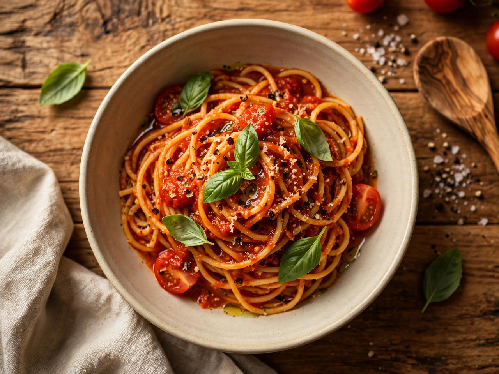
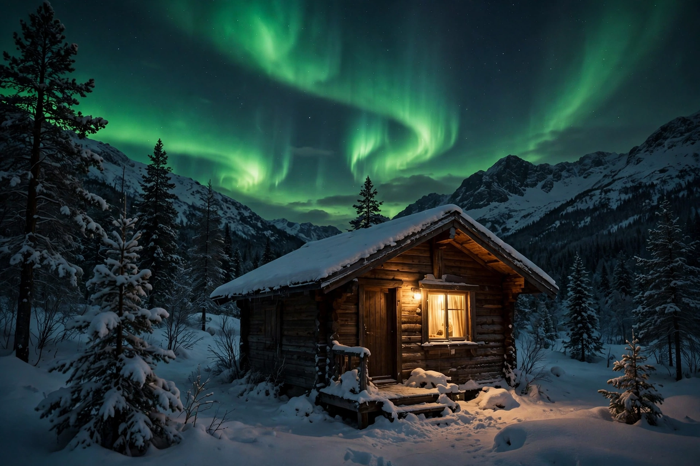

A hiker above a sea of clouds at sunrise
❤️ 🤍 💬 ✈️ 🔖
1,248 likes
jon.trails Worth the 4am alarm. Ridge trail, day two. #hiking #sunrise
View all 86 comments
🏠 Home
🔍 Search
🧭 Explore
🎬 Reels
✉️ Messages
❤️ Notifications
➕ Create
👤 Profile
From Meta · Wikipedia article
A hiker above a sea of clouds at sunrise
❤️ 🤍 💬 ✈️ 🔖
1,248 likes
jon.trails Worth the 4am alarm. Ridge trail, day two. #hiking #sunrise
View all 86 comments

A bowl of tomato pasta with basil on a wooden table
❤️ 💬 ✈️
3,902 likes
sofia.eats Sunday sauce, exactly how my grandmother taught me.

Snowy mountain cabin under northern lights
❤️ 💬 ✈️
8,411 likes
north.peak The sky put on a show last night.
alex.morgan.ig Switch
Suggested for you
coastal.frames Follow
bakery.diary Follow
trains.of.europe Follow
About · Help · Press · API · Jobs · Privacy · Terms · Locations · Meta © 2025